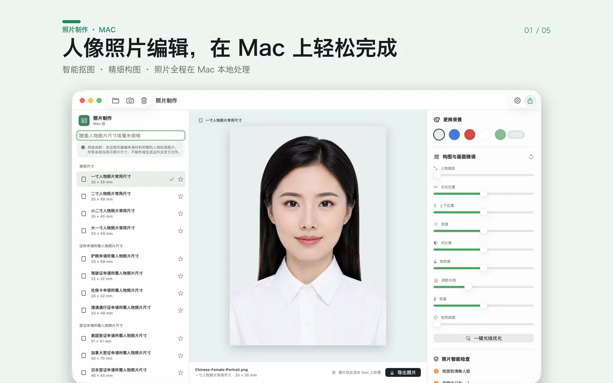
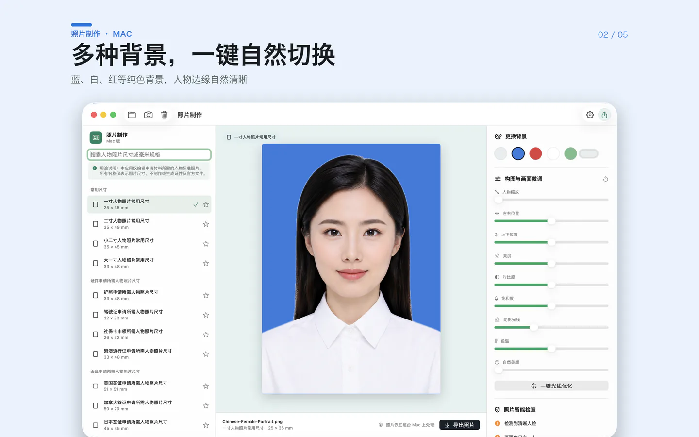
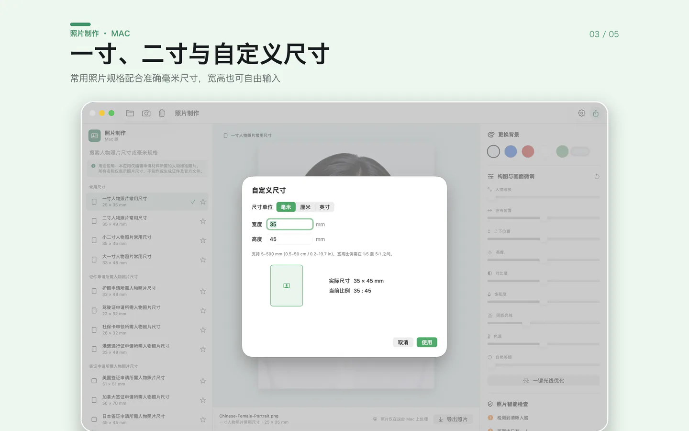
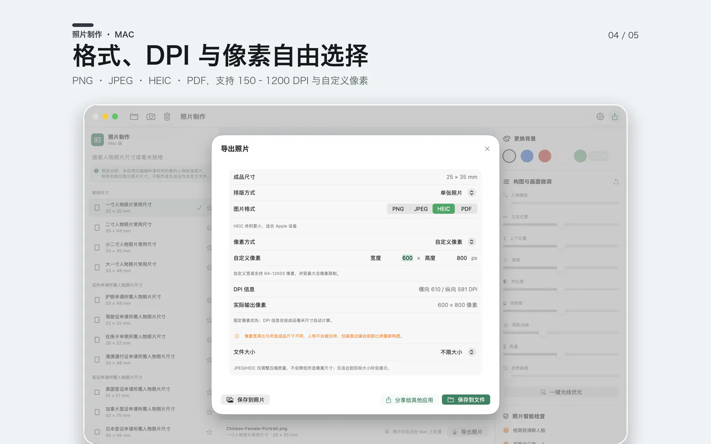
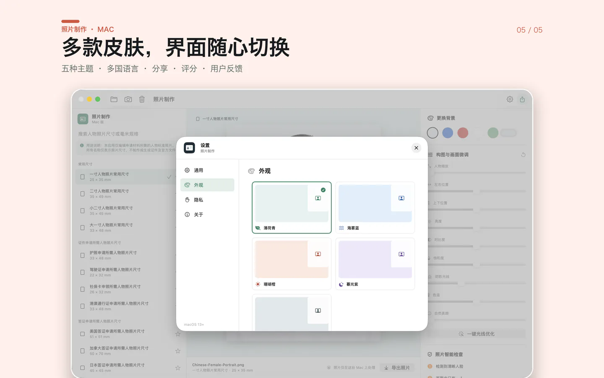
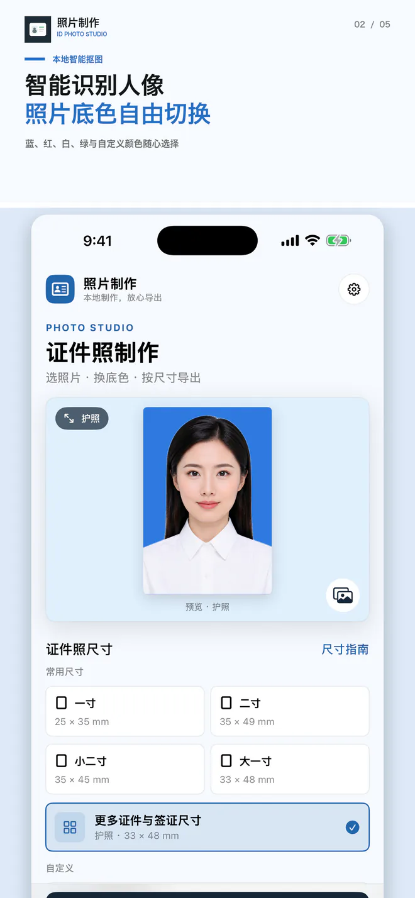
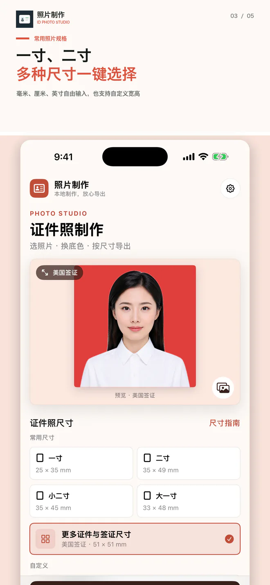
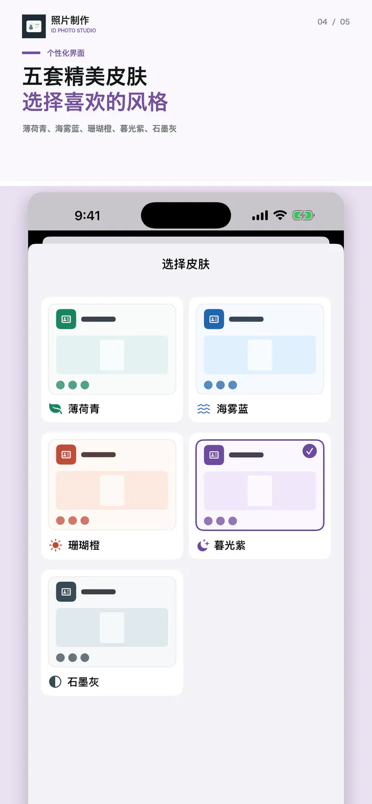
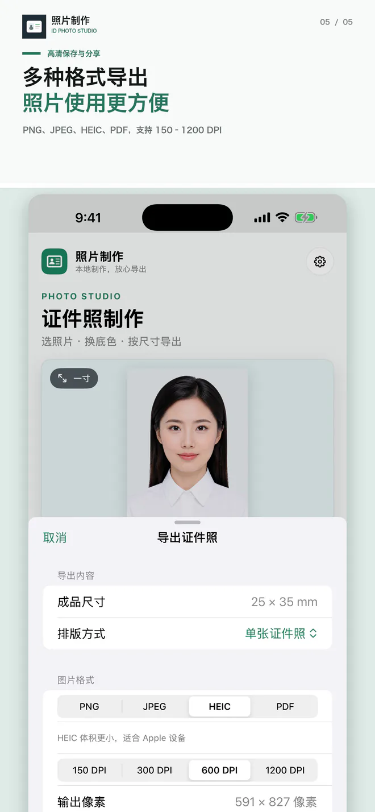

当前版本 v1.0.1 · iOS / iPadOS 17.0+ · macOS 13.0+
当前版本 v1.0.1 · iOS / iPadOS 17.0+ · macOS 13.0+ 照片制作
把一张普通照片，做成自然、端正的证件照。智能抠图、换背景、调整尺寸、自然美化与导出都在设备上完成。

本地人像处理
识别、背景移除、美颜调整与成图均使用 Apple 系统框架在设备上完成。
尺寸与画面优化
支持常用及自定义尺寸、自动构图、光线优化、自然美颜和照片检查。
专业导出
支持 PNG、JPEG、HEIC、PDF、150–1200 DPI、文件大小控制和多种打印排版；Mac 版另有常用及自定义像素。
OFFICIAL PROMO VIDEO
30 秒了解照片制作
真实操作画面展示智能人像识别、实时换背景、自定义尺寸和多格式导出。支持 iPhone、iPad 与 Mac。
IPHONE · IPAD · MAC
选照片，换底色，按尺寸导出
视频使用真实应用录屏，并配有甜美自然的普通话女声和画面字幕。所有核心处理都在设备本地完成。
- 智能识别人像并生成自然边缘
- 蓝、红、白等背景实时预览
- 常用证件尺寸和自定义规格
- PNG、JPEG、HEIC、PDF 与多档 DPI
IOS ADVERTISING & PRIVACY
iOS 广告版说明
iPhone 与 iPad 版本可能展示开屏、横幅和原生广告。首次启动会先完成适用的 Google UMP 隐私选择与 Apple ATT 授权，再从“照片制作”等待页展示可用的开屏广告，关闭后进入主界面；无网络或无广告填充时会自动继续。拒绝 ATT 不影响照片制作功能。Mac 版本不使用 Google 移动广告或 ATT。
MAC APP STORE SCREENSHOTS
Mac 当前界面
以下展示图来自 v1.0.1 当前构建，覆盖本地人像处理、背景替换、自定义尺寸、精确像素导出和主题设置。




IPHONE & IPAD
移动端真实界面
从选择照片到换背景、尺寸、自然调整和导出，均为核心功能真实截图；当前版本名称已更新为“照片制作”，并加入广告隐私流程。




